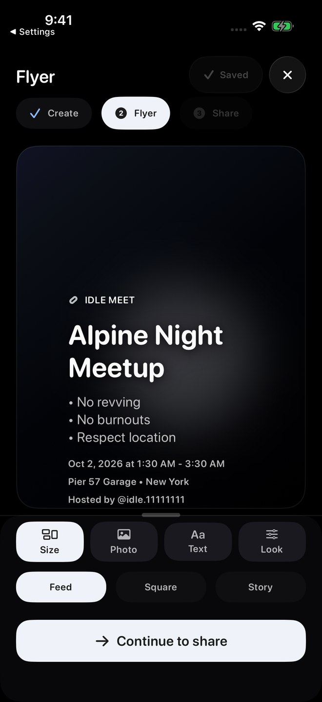
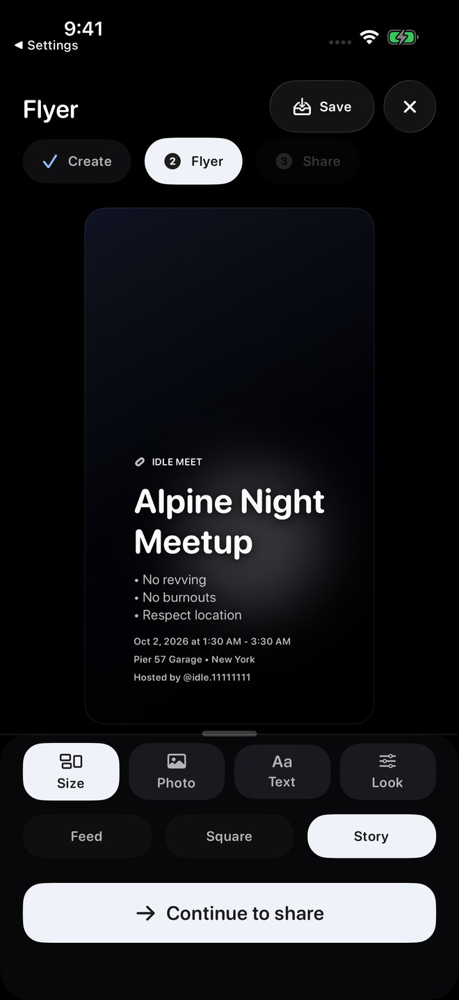
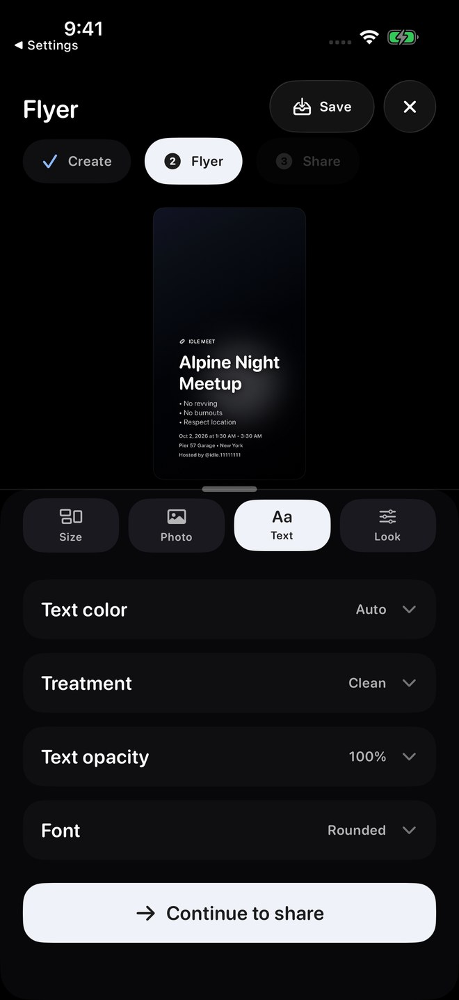
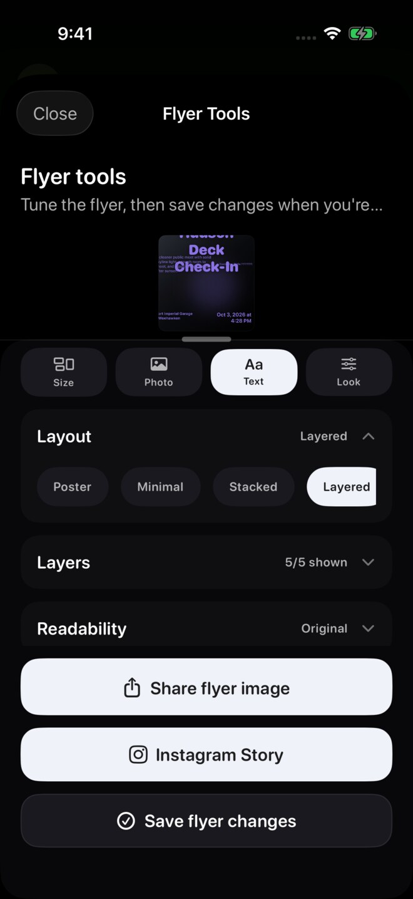
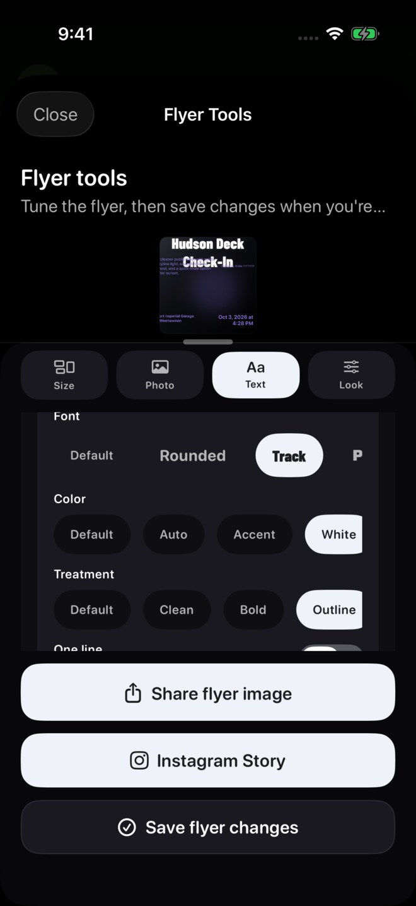
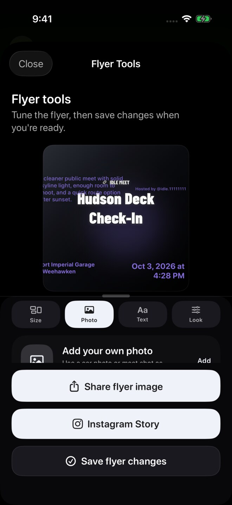
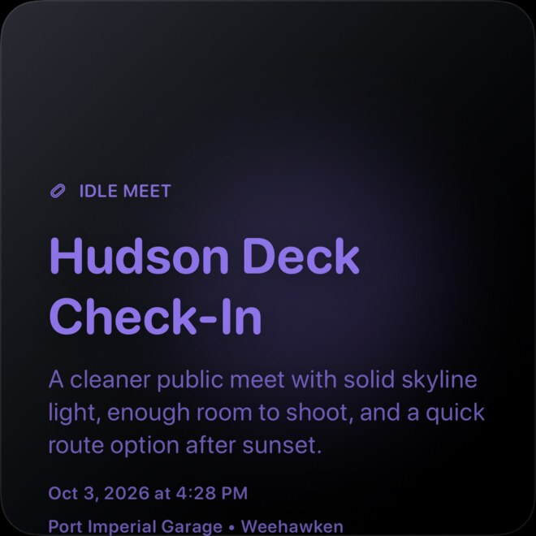

Screenshots show sample content from the Idle test drive in a prerelease build, version 1.3.0 (1), using Dark appearance and Alpine White. Your app may look different. Learn about the test drive.
Choose a format and check the whole preview
Open the flyer editor while hosting a meet or from Host Tools. In the Host flow, choose the Flyer stage, then Size.
Choose Feed, Square, or Story. Review each format separately: its proportions change, so check the cover crop, title, rules, time, address, and host footer before saving or sharing.
If important details are clipped, adjust the available layout or crop controls and check the preview again.




Adjust the text
Open Text to review the available styling controls. This example shows Text color, Treatment, Text opacity, and Font.
Where supported, layer controls let you show or hide text, move and scale layers, and adjust alignment or wrapping. The earlier pictured panel shows global styling. The Layered example below shows the individual Title controls.
After each change, check readability against the background and review every format you plan to share.

Save changes to a hosted meet
In Host Tools, tap Save flyer changes when you want the hosted meet to use the edited flyer. That control is separate from Share flyer image and Instagram Story.
Previewing or sharing does not replace the explicit save step. The earlier screenshot locates the save control; the reopened local example below demonstrates a saved composition. Attendee notifications were not tested.

Use the Layers controls in a Layered layout
In Text, expand the tools and choose Layout → Layered. The Layers row then provides individual text-layer controls.
The Title panel includes visibility, Idle label, Size, Alignment, Font, Color, and Treatment. Only the Title layer was operated in this local example.


Style and move the Title layer
The local Title used Track, White, and Outline. Dragging its size slider changed 155% to 106%.
Collapse the tools to move the title directly in the preview. Here the title was dragged downward, with its Idle label moving alongside it. Review readability after each change.
Other layers, wrapping, reset, and the separate effect of alignment remain unverified.


Reopen the saved composition
Use Save flyer changes, then reopen Flyer Tools to check the composition. The local sample retained its Layered/Square layout and smaller white title in the moved position.
This demonstrates local Demo save/reopen only. Remote hosted persistence and attendee notification were not tested.


Check the generated image as well as the preview
Share flyer image generated this untouched 1080 × 1080 Square PNG in the local Demo. The address is clipped at the bottom and the host footer is absent in this particular sample.
Inspect the whole generated image before sharing. If details are missing or clipped, return to the format and layout controls and recheck the result. This example does not establish a defect in every layout or a verified fix for this composition.
No share destination, Photos save, or Instagram handoff was used.


Prepare an Instagram Story
- Open flyer sharing and choose Instagram Story.
- Review the Story preview and choose Adjust Story crop if needed.
- Tap Open Instagram.
- Finish editing or posting inside Instagram.
The steps above describe the sharing flow; these Demo captures stop before the Instagram handoff. The Square example above adds generated-image evidence. Photo import and external posting were not tested.
Idle does not post for you
The handoff opens Instagram's Story composer. You decide whether to edit or post there. If Instagram cannot open, use the standard Share option instead.
Troubleshooting
- Text or a car is clippedReturn to the format preview, adjust the crop or layer position, and check it again.
- Shared flyer does not matchConfirm the format and preview before exporting. In Host Tools, save changes if the hosted meet should use the new version.
- Instagram does not openConfirm Instagram is installed and available, or use the standard Share option.
- Edits disappearedPreviewing and sharing do not save Host Tools edits. Use Save flyer changes.
Contact support
Email support@idlemeets.com with the meet title, selected format, what looks wrong, and a screenshot of the preview.